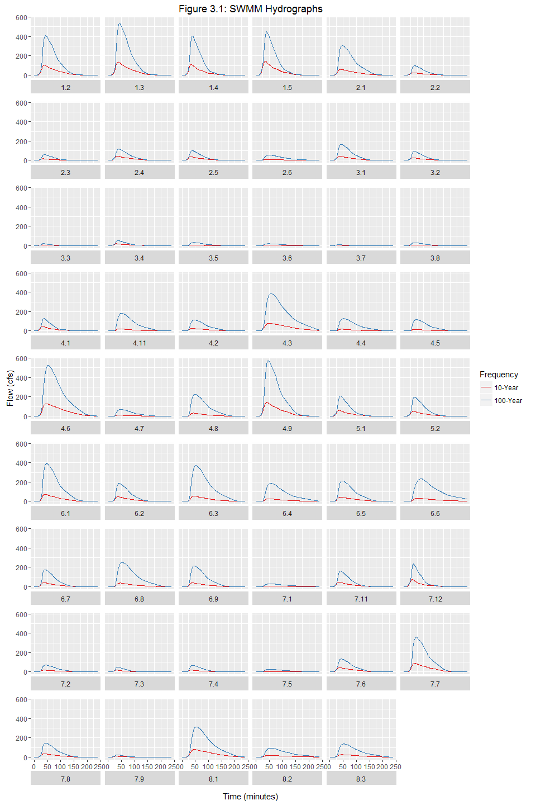

3.0 Hydrologic Analysis
3.1 Overview
For this study, a new hydrologic model was prepared for the Town of Lyons. This purpose of this model was to develop updated hydrology for the 2-, 5-, 10-, 50-, and 100-year storm frequencies for both existing and future imperviousness. Similar to the 1998 BRW study, the UDFCD's Colorado Urban Hydrograph Procedure (CUHP) was used to develop runoff hydrographs for each sub-basin in the study. However, with the recent release of CUHP v2.0 by the UDFCD, and that Lyons is located outside of the UDFCD boundary, further investigations were made to confirm the applicability of the new CUHP software in comparison to other hydrologic methods. The selection of the hydrologic model is discussed below.
A full copy of the Hydrologic study is provided in Appendix B.
3.2 Hydrologic Model
To evaluate the latest version of CUHP (and other hydrologic methods) and to determine the appropriate model inputs, a peak flow sensitivity analysis was conducted for a typical undeveloped sub-basin near the Town, using various hydrologic techniques. The following lists the hydrologic methods that were reviewed in the sensitivity analysis:
-
United States Geologic Survey (USGS) Regional Regression Equations.
-
Rational Method.
-
CUHP 2005 Version 1.4.4 -- This is the more recent model used by UDFCD (prior to the recent update) and has been used for over 40 years to estimate peak flows in the Denver metropolitan area and front range.
-
CUHP Version 2.0 -- Recently the UDFCD has determined that peak flows developed in recent hydrologic studies using CUHP 2005 version 1.4.4 deviated from statistical stream gage analysis across the District and created uncertainty with CUHP model results for some studies. Additionally, CUHP 2005 version 1.4.4 has not been calibrated with gage data since its inception in the 1970s with adjustments made in the 1980s. Therefore, UDFCD has recalibrated CUHP with updated rainfall and runoff with results tested against stream gage frequency analysis. However, it should be noted that during the recalibration of CUHP, there were no watersheds with an imperviousness less than 20 percent. Therefore, for sub-basins with imperviousness below 20 percent, the peak flows are estimated using similar methodology used in CUHP 2005 version 1.4.4.
-
HEC-HMS Model - using Curve Number method.
-
UDFCD Allowable Release Rates -- The UDFCD Urban Storm Drainage Criteria Manual, Volume 2, Storage chapter provides pre-development peak unit discharge rates for watersheds of various slopes and Hydrologic Soil Groups (HSGs) that are utilized to determine the maximum allowable 100-year release rates for a full spectrum detention facility.
Based on the results of the undeveloped sub-basin peak flow sensitivity analysis, CUHP version 2.0 was recommended for the hydrologic modeling for the Lyons storm drainage master plan. The unit rates of runoff from CUHP version 2.0 were generally in the same range as those generated using the Rational Method, in addition to the UDFCD allowable release rates. The unit rates of runoff generated using CUHP 2005 version 1.4.4 were higher than any of the other hydrologic methods which potentially would overestimate the peak flows for the Town. The regional regression equations significantly underestimated the unit rates of runoff when compared to the other hydrologic model methods. Further documentation on the hydrologic model recommendations can be found in Appendix B.
3.3 Design Rainfall
The design rainfall for the project was derived using the one-hour precipitation depths from the National Oceanic and Atmospheric Administration (NOAA) Atlas 14. One-hour point precipitation depths were based on the centroid of the entire project area and were recorded for the 2-, 5-, 10-, 50-, and 100-year recurrence intervals. Point precipitation depths for varying elevation within the project area were identified, but point precipitation depth adjustments due to elevation were not necessary since the difference in the one-hour precipitation depths by elevation was less than 0.1 inches. Using the one-hour precipitation depth, CUHP calculates the incremental depth for each time increment from 5 to 120 minutes. Due to the smaller sizes of sub-basins, precipitation depth-area reduction factors were not utilized. Table 3-1 summarizes the design rainfall depths for various recurrence intervals.
Table 3-1: 1-hr Rainfall Depth
| Return Period | 1-Hr Rainfall Depth (in) |
|---|---|
| 2-yr | 0.77 |
3.4 Sub-basin Characteristics
Sub-basin characteristics for each basin are further described below and can be found in Appendix A.
3.4.1 Sub-basin Delineation
Sub-basins were delineated using the 2011 LIDAR and associated 1-ft contours. There is a total of 44 sub-basins within the project area. The undeveloped sub-basins located higher up in the watersheds are larger in size than the sub-basins within the urbanized Town. Sub-basin sizes range from 17 acres to 335 acres. Appendix A provides an overview of the sub-basins.
3.4.2 Length, Centroid Distance, Slope
CUHP parameters such as sub-basin length, distance to centroid, and slopes were derived for each sub-basin using topographic data. Slopes were computed using the length-weighted, corrected average slope from UDFCD's Urban Storm Drainage Criteria Manual (USDCM), including corrections for stream and vegetated channels.
3.4.3 Depression Losses
The maximum pervious depression storage was set to the recommended value of 0.4 inches for wooded areas and open fields. The maximum impervious depression storage was set to the recommended value of 0.1 inches. No adjustments were made to these recommended values.
3.4.4 Infiltration
Soils data was obtained from USDA NRCS Soil Survey Geographic Database for the project area which classified the soils into Hydrologic Soils Groups (HSGs). Additional soils mapping was obtained from the USDA NRCS Web Soil Survey. This information is provided in Appendix B.
The initial rate, final rate, and decay coefficient for the Horton's infiltration parameters were based on the recommended values in the USDCM. The Horton's infiltration parameters were weighted based on the percentage of each soil type within each sub-basin. Table 3-2 summarizes the Horton's infiltration parameters utilized in the analysis.
Table 3-2: 1-hr Rainfall Depth
| Infiltration (inches per hour) | |||||
| Hydrologic Soil Group | Initial - fi | Final - fo | Decay Coefficient | ||
|---|---|---|---|---|---|
| A/B | 4.5 | 0.6 | 0.0018 | ||
3.4.5 CUHP Output
The hydrologic analysis was conducted for both existing conditions and future conditions land use. The 100-year peak discharges from CUHP v2.0 for both conditions are presented in Table 3-3. CUHP output for other recurrence intervals is provided in Appendix B.
Although this hydrologic analysis did not calibrate peak flows to the previous Town of Lyons Drainage Master Plan Final Report prepared by BRW, the CUHP unit rates of runoff were compared with the previous study unit rates of runoff for sub-basins that were similarly delineated. In some cases, the unit rates of runoff are similar, but there are cases where the unit rates of runoff differ. These differences are primarily due to physical differences in input assumptions (imperviousness, HSGs, etc.).
Table 3-3: CUHP Output, 100-Year
| Subbasin | Existing Conditions 100-Year Peak Discharge (cfs) | Existing Conditions Unit Rate of Runoff (cfs/ac) | Future Conditions 100-Year Peak Discharge (cfs) | Future Conditions Unit Rate of Runoff (cfs/ac) |
|---|---|---|---|---|
| 1.2 | 408 | 2.16 | 408 | 2.16 |
3.5 Hydrograph Routing
A hydrograph routing network was developed based on field reconnaissance, survey of the existing storm sewer network within Town, and the BRW, Inc. drainage master plan using EPA SWMM. The routing network in EPA SWMM includes: nodes (junctions and dividers), conduits (including overflow or diverted links), storage units, storage outlets, and outfalls. The model input parameters for nodes include: node identifier, invert elevation, maximum node depth, and overflow or diverted link identifier. Input parameters for conduits include: conduit identifier, upstream and downstream node identifiers, shape (e.g. trapezoidal, circular, rectangular, etc.), length, bottom width, side slopes, roughness coefficient, number of barrels, and inlet/outlet offset depths. Input parameters for storage units include: storage unit identifier, invert elevation, maximum depth, and a stage-area relationship. Input parameters for storage outlets include: outlet identifier, upstream and downstream node identifiers, and a stage-discharge relationship. Input parameters for outfalls include the outfall identifier and invert elevation. Input parameters for the SWMM model are provided in Appendix B.
3.5.1 SWMM Node Input Parameters
Node identifiers in SWMM are synonymous with the sub-basin IDs. Invert elevations were determined using the 2011 LIDAR data. In some instances, a divider was used to allow the flow to be routed through the existing storm sewer system but when the capacity of the storm sewer is exceeded, the water overflows into the street (along 2nd Avenue south of E. Main Street and near the intersection of Main Street and E. Main Street).
3.5.2 SWMM Conduit Input Parameters
For the drainage basins located outside of Town, transects of the drainage channels were generated using the 2011 LIDAR and a representative channel cross-section was input into the SWMM model. The manning's roughness coefficient for these undeveloped drainage basins was estimated to be 0.035 to represent channels with some weeds and stones.
Within the developed areas, characteristics of the drainage facilities were based on survey of the existing storm sewer system, field reconnaissance, and sizing the channels so that the flow could adequately be conveyed to the outfall. Between 5th Avenue and 4th Avenue, there is an existing drainage ditch that varies in width and depth but is enclosed downstream to accommodate development over the ditch. For the purposes of the SWMM model, it was assumed to have a uniform width and depth. There is a small roadside swale with intermittent driveway and roadway culverts along the west side of 3rd Avenue. However, the swale and culverts have such limited capacity and during large storm events, the water would flow down 3rd Avenue. At 3rd Avenue and Main Street there is a 30" reinforced concrete pipe that diverts flow from 3rd Avenue to the southeast along E. Main Street. During large storm events, the flow continues down within E. Main Street, which was modeled as an open channel, until it discharges into the St. Vrain Creek. South of E. Main Street along 2nd Avenue there is a storm sewer system consisting of 18-inch, 12-inch, and 15-inch corrugated metal pipe which discharges into the St. Vrain Creek. This storm sewer system was modeled as a 12-inch pipe in the SWMM model.
There are many sub-basins which are direct flow areas into the North St. Vrain Creek, South St. Vrain Creek, or St. Vrain Creek. Therefore, the conduits for these sub-basins were modeled as "dummy" conduits.
3.5.3 SWMM Storage Input Parameters
An existing detention pond is located within Sub-basin 1.5. The stage-area relationship was taken directly from the BRW, Inc. drainage master plan, as well as the stage-discharge relationship for the outlet. No additional detention ponds were modeled for the existing conditions, although inadvertent storage and/or privately owned detention may elsewhere within the project area.
3.5.4 SWMM Output
The SWMM routing was conducted for both existing conditions and future conditions. The 100-year peak discharges at all of the outfalls from the SWMM model for both conditions are presented in Table 3-4. SWMM output for other recurrence intervals is provided in Appendix J.
Table 3-4: SWMM Output, 100-Year
| SWMM Outfall Name | Routed Subbasins | Receiving Water | Existing Conditions 100-Year Peak Discharge (cfs) | Future Conditions 100-Year Peak Discharge (cfs) |
|---|---|---|---|---|
| StoneCanyonSt.VrainOUT | 4.9, 4.11, 4.6, 4.8, 4.7, 4.3, 4.5, 4.4, 4.1, 4.2 | St. Vrain Creek | 2357 | 2361 |
 Figure 3-1: SWMM Hydrographs
Table 3-5: SWMM Output, Outfalls
| Outfall | Design Flow Location | 2-yr | 5-yr | 10-yr | 50-yr | 100-yr |
|---|---|---|---|---|---|---|
| Eagle Canyon | ||||||
| North St. Vrain | ||||||
| Ewald Avenue | ||||||
| South St. Vrain | ||||||
| Steamboat Valley | ||||||
| Third Avenue | ||||||
| South 2nd Avenue | ||||||
| Red Hill Gulch | ||||||
| Lyons Valley | ||||||
| Stone Canyon | ||||||
Table 3-6: SWMM Output, Existing Structures
| Outfall | Structure | Size | Approximate Capacity (cfs) | Approximate Return Period |
|---|---|---|---|---|
| Steamboat Valley | ||||
| Third Avenue | ||||
| South 2nd Avenue | ||||
| Ewald Avenue | ||||
| Lyons Valley | ||||
| Eastern Lyons | ||||
| Stone Canyon | ||||